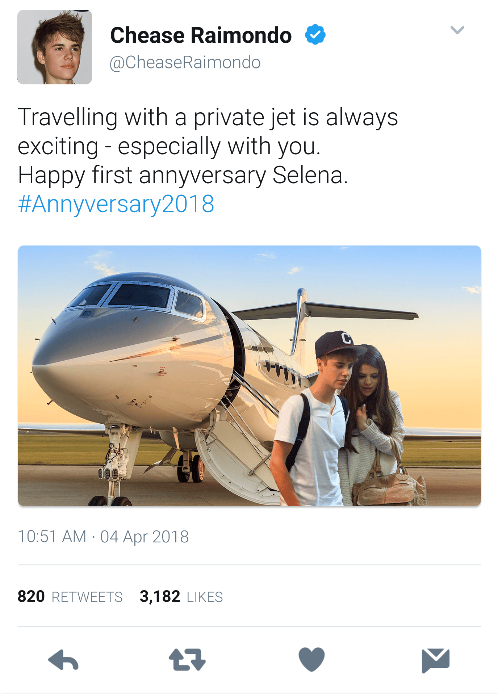
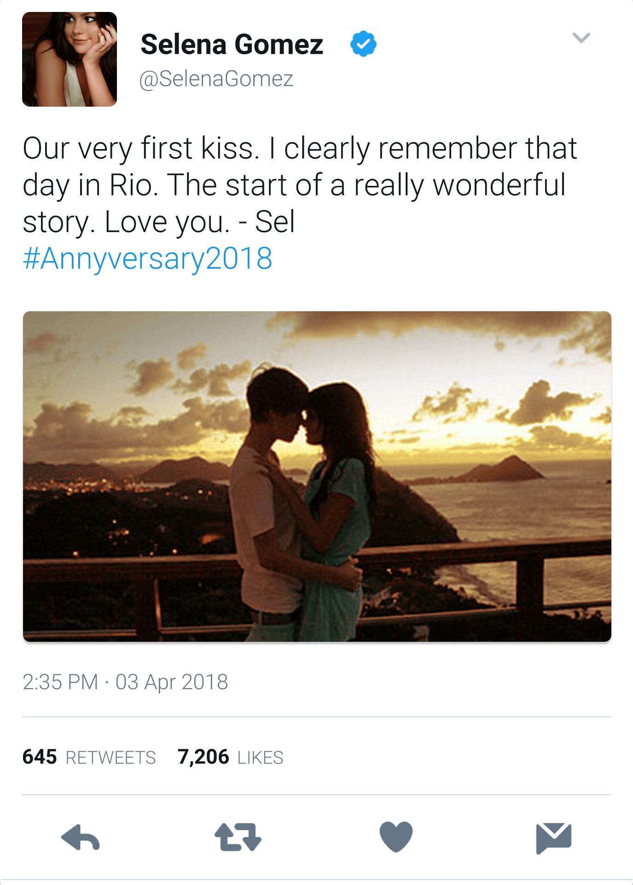
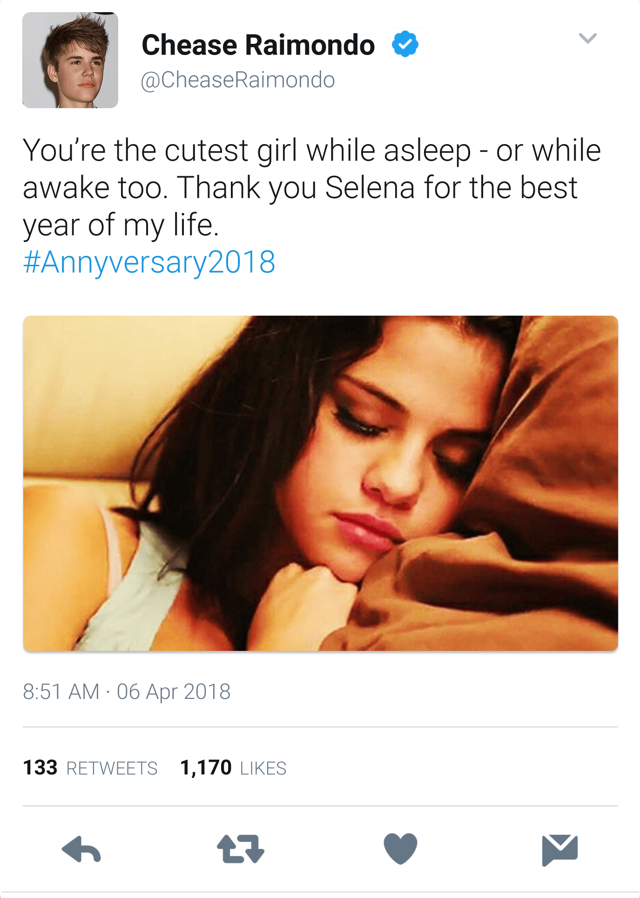
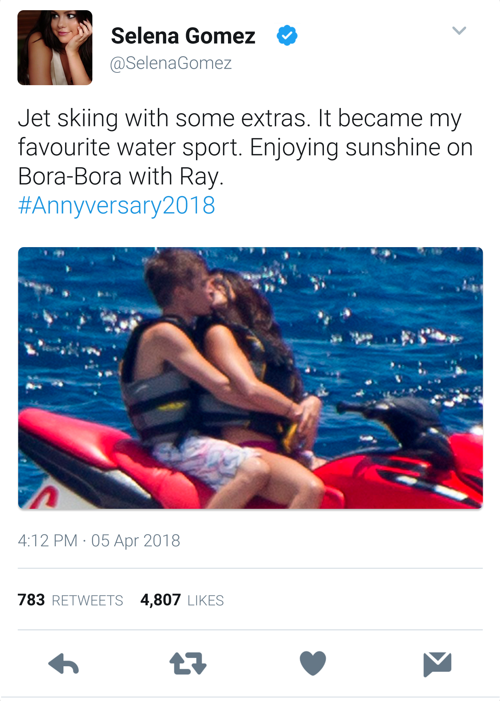

Új kormánytagok kinevezése
2017 szeptemberében Waikiki vezetésében jelentős strukturális változások következtek be. A szenátus rendkívüli ülésén két meghatározó fontosságú konzuli kinevezésről született döntés, amelyek keretében Selena Gomez és Jessica Walker nyertek konzuli megbízatást. A kinevezések célja a diplomáciai kapcsolatok erősítése és a külpolitikai érdekek hatékonyabb képviselete volt, így mindkettőjük feladata kulcsfontosságúvá vált Waikiki globális szerepének növelésében. Ezt követően a törvényhozás egy másik jelentős személyi bővítésen ment keresztül. A szenátus új tagjaként köszönthette Olivia Holtot, ami tovább erősítette a törvényhozó testület szakmai kompetenciáját. Az új kinevezések, amelyek a szenátus körültekintő mérlegelése és Raimondo államfő javaslata alapján történtek, jelentősen megerősítették az állam vezetői struktúráját. Az eseményt ünnepélyes ceremónia kísérte a Nova Auréliai Parlament dísztermében, ahol az új tagok a teljes királyi család jelenlétében tették le esküjüket a nemzet alkotmányára.


Európai diplomáciai körút
Waikiki kormányának magas rangú delegációja hivatalos látogatást tett Luxemburgban, ahol kiemelt fogadtatásban részesültek a királyi család részéről. A diplomáciai misszió során kiemelkedő jelentőségű megállapodás született, amikor Chease Young sikeresen előterjesztette egy innovatív palládium reaktor létesítésének tervét Henrik luxemburgi nagyhercegnek. A Techno Industries által tervezett létesítmény megvalósulása esetén az első ilyen típusú energetikai létesítmény lesz az európai kontinensen. A hivatalos program végeztével Raimondo, Selena, Bailey és Olivia a kulturális kapcsolatok elmélyítése céljából Párizsba látogattak. A francia fővárosban exkluzív, zártkörű tárlatvezetésen tekinthették meg a Louvre legjelentősebb műkincseit, köztük a világhírű Mona Lisát. A látogatás különleges momentumait a Le Monde napilap címlapon örökítette meg, bemutatva, amint a delegáció tagjai a napnyugta fényeiben sétálnak a Szajna-parton, majd egy privát jachtkirándulással egybekötött elegáns gálavacsorán vesznek részt.


Selena, Taylor és Tyler koronázási ünnepsége
2017 október 16-án kiemelkedő állami eseményre került sor, amikor Selena Marie Gomezt hivatalosan Waikiki hercegnőjévé, míg Taylor Lautnert és Tyler Poseyt herceggé koronázták egy nagyszabású, közös ceremónia keretében. A koronázás különleges jelentőséggel bírt mind személyes, mind államigazgatási szempontból, hiszen ezzel a szenátus három kulcsfontosságú tagja emelkedett az állam legmagasabb közjogi méltóságai közé. Az esemény szimbolikus jelentőségét tovább növelte, hogy mindhárman, akik korábban a szórakoztatóiparban szereztek hírnevet, immár formálisan is a waikiki uralkodó elit szerves részeivé váltak. A koronázási ünnepségen a személyes meghívottak között olyan kiemelkedő művészek jelentek meg, mint Jennifer Stone, Vanessa Hudgens, Katie Cassidy, Leighton Meester és Demi Lovato. Selena beszédében többször is elegánsan utalt korábbi művészi pályafutására. Az esemény nemzetközi jelentőségét jelzi, hogy számos uralkodóház képviseltette magát, köztük az angol és spanyol királyi család tagjai, továbbá magas rangú egyházi méltóságok, köztük két bíboros, valamint a francia miniszterelnök és a dalai láma is megtisztelte jelenlétével a ceremóniát. A koronázást követően nagyszabású állami fogadásra került sor, ahol a világ minden tájáról származó kulináris különlegességeket szolgáltak fel a nemzetközi politikai, gazdasági és vallási elit képviselőinek, majd az estét pompázatos tűzijáték koronázta meg.


Raimondo aláírja a Transzatlanti Szabadkereskedelmi megállapodást
2017 november 17-én történelmi pillanatra került sor Waikiki fővárosában, ahol Raimondo Chease ünnepélyes keretek között aláírta a Transzatlanti Szabadkereskedelmi Megállapodást, amely az Amerikai Unió, az Európai Unió és az Afrikai Unió részvételével megalakuló kereskedelmi övezet alapkövét képezi. Az új társulás a Föld eddigi legnagyobb kereskedelmi blokkját hozza létre, összesen 59 országot magába foglalva. A megállapodás célja, hogy szinte valamennyi termékre csökkentsék a vámokat, közös minőségi, környezetvédelmi és fogyasztóvédelmi előírásokat vezessenek be, megkönnyítve ezzel a határokon átnyúló kereskedelmet és beruházásokat. A közgazdasági elemzések szerint a szabadkereskedelmi övezet a tagországok exportját akár 15%-kal is növelheti az elkövetkező években. Waikiki kormányzata a nemzeti népszavazás eredményére alapozta döntését, melyen a választók 81%-a támogatta a nemzetközi vámmentességről szóló megállapodást, így Raimondo az ország egyértelmű felhatalmazásával ülhetett tárgyalóasztalhoz.


Raimondo és Selena a világűrben
A Waikiki-i űrprogram saját űrállomásának meglátogatását Raimondo már gyerekkora óta tervezte, mióta szülei 2010-ben a világűrbe utaztak. Selenával először egy 2017-ben tartott sajtótájékoztatón beszéltek arról, hogy 2018 februárjában együtt a világűrbe látogatnak. A kéthetes világűri utazás során a hercegi pár kísérletek elvégzésében segédkezett, űrsétákon vett részt, megtapasztalta a súlytalanság állapotát és életre szóló kalandokat élt át. Előtte azonban hosszú kiképzésen vettek részt, melynek során találkoztak az Aldrin űrsikló 19. küldetéséről visszatért személyzetével, megismerkedtek az űrruhák használatával és az űrsikló valamint az űrállomás biztonsági előírásaival. A nagy napon a Columbus űrsikló sikeres kilövése után Föld körüli pályára állt, majd pedig dokkolt Waikiki űrállomásán. A közel 200 km-es Föld körüli pályán töltött 14 napjuk során Raimondóék 5 másik asztronautával osztoztak az űrállomás fedélzetén, többször is űrsétán vettek részt és hosszasan csodálták a semmi máshoz nem fogható panorámát. A küldetés a terveknek megfelelően, biztonságos visszatéréssel és sikeres landolással zárult, amely Waikiki űrkutatási programjának jelentős mérföldköve és a globális tudományos szerepvállalás új standardját is megteremtette.


Donald Trump amerikai elnök Waikikire látogat
Egy évvel a megválasztása után az Egyesült Államok új elnöke, Donald Trump Waikikire látogatott, ahol találkozott Raimondóval, Selenával és a szenátus többi tagjával is. Donald Trump feleségével, Melaniával és fiával, ifjabb Donald Trumppal együtt a Hotel President elnöki lakosztályában szállt meg. Az Air Force One landolása és a díszes protokolláris fogadtatás után Chease Young és Raimondo társaságában meglátogatta Waikiki parlamentjét, valamint a Világkormány központi épületét, ahol beszéltek a két vezető közös terveiről is. Este a diplomáciai formaságokkal halmozott nap zárásaként Trump és családja Waikiki kormányának kiemelt tagjaival együtt egy elegáns étteremben vacsorázott. Másnap Trump elnök és Melania megtekintették az Amazonia Tropics és az Atlanta Falcons amerikai futballmérkőzését, miközben fiuk Raimondóval és Selenával a Nova Auréliai vidámparkban töltötte a napot. Késő délután Trump és családja Raimondóékkal golfozni indult, ahol a minibajnokságot Donald Trump nyerte meg. A két család este ismét közös vacsorán vett részt. Trump két napig maradt Waikikin, hiszen az elnöki kötelezettségei elszólították, így másnap az Air Force One fedélzetén indult vissza Washingtonba.


Raimondo és Selena iskolák építésében segítenek Indiában
Az állami vezetés társadalmi felelősségvállalásának kiemelkedő példájaként a hercegi pár egyhetes hivatalos látogatást tett India különböző városaiban, ahol személyesen felügyelték a helyi fejlesztési programok megvalósítását. Raimondo és Selena iskolák berendezésében, étel és vízosztásban, valamint egyéb jótékonysági munkákban is részt vettek. Waikiki kormánya jelentős összegeket költött nemzetközi segélyprogramokra és infrastrukturális fejlesztésekre, melyek keretében autópályákat és utakat építettek Afrikában, iskolákat alapítottak Indiában, továbbá pénzt adományoztak a szegények segítésére Argentínában és Peruban. A misszió zárásaként India elnöke fogadta a hercegi párt, ahol elismerését fejezte ki Waikiki nemzetközi szerepvállalásáért és ünnepélyes fogadással tisztelte meg a delegációt.


Raimondo és Selena szabadideje
A sűrű és eseménydús elmúlt évek után a fiatal hercegi pár, Raimondo és Selena Nova Auréliai otthonukban élvezték a pihenést, ahol leginkább kedvenc hobbijaiknak, a tengeri fürdőzésnek, a sportoknak, a táncnak és a videójátékozásnak hódoltak. A csendesebb időszakban úgy határoztak, hogy vendégül látják kedvenc sorozataik sztárjait, így elsőként A SHIELD ügynökei című széria hat főszereplőjét, köztük a Raimondo által már korábbról ismert Chloe Bennetet hívták meg egy bowlinggal és tematikus társasjátékesttel egybekötött programra. Ezt követően Selena televíziós gyökereihez hűen számos egykori Disney-kollégát láttak vendégül a palotában. Végül a Hazug csajok társasága négy főszereplője is tiszteletét tette náluk, köztük Selena gyerekkori barátnője, Ashley Benson. Velük a pár egy kötetlen, exkluzív jachtkirándulással és esti kártyapartival egybekötött napot töltött.


A világ legbefolyásosabb emberei
A Forbes által 2018-ban összeállított legbefolyásosabb emberek lista élén természetesen Chease Young áll. Őt rögtön a Waikiki-i királyi család többi tagja, Raimondo és Jessica követi. Negyedik a listán Donald Trump, az Egyesült Államok elnöke, hatodik pedig Oroszország vezetője, Vlagyimir Putyin. Az első 10 legbefolyásosabb személy között szerepel Angelina, Jennifer és Selena Gomez is. A további top 20 helyeket a szenátus tagjai, Edward kormányzó, George Bush elnök és Xi Jinping foglalják el. Utánuk következik Angela Merkel német kancellár, Larry Page a Google-től, Barack Obama volt amerikai elnök, továbbá a Microsoft alapítója, Bill Gates. Raimondóék személyi asszisztense, London Tipton pedig a lista huszonnegyedik helyén szerepel.


Nyaralás Angelinával és Jenniferrel
A három testvér, Raimondo, Angelina és Jennifer párjaikkal együtt Thaiföldre utaztak. A rengeteg elfoglaltságuk miatt hosszú ideje ez volt az első alkalom, hogy Chease gyerekei hosszabb ideig együtt pihenhettek. Raimondóék az út során Bangkokot, Phuket szigetét és Ajutthaja ősi városát is meglátogatták, valamint több híres thaiföldi nemzeti park élővilágát megcsodálták, és elefántháton is utaztak. A délkelet-ázsiai nyaralás során Raimondóék a kambodzsai Angkor Wat ősi templomához is ellátogattak, amely különleges és szimbolikus pillanat volt Raimondo és Selena számára, hiszen egyszerre jelentett spirituális elmélyülést, történelmi érdeklődést és nyilvános megjelenést a világ egyik legismertebb műemlékénél.


Raimondo és Selena Abu-Dzabiba utaznak
Raimondo és Selena hivatalos látogatást tettek Abu-Dzabiban, az Egyesült Arab Emírségek fővárosában, ahol különleges vendéglátójuk Sheikh Hamdan herceg, Raimondo gyermekkori barátja volt. A két fiatal vezető barátsága hosszú évekre nyúlik vissza, és kapcsolatuk azóta is töretlen maradt. A 21 éves trónörökös, aki jelenleg Sheikha Shamsa hercegnővel él, az emírség egyik legbefolyásosabb fiatal vezetője. Az államfői pár egy exkluzív lakosztályban kapott szállást az emíri palotában, és nagyszabású fogadást rendeztek a tiszteletükre. A vendéglátó Zayed Al Nahyan elnök családja, amely a világ legjelentősebb uralkodóházai közé tartozik, több mint 30 milliárd dolláros vagyonával és szerteágazó nemzetközi befektetéseivel meghatározó szereplője a globális gazdaságnak. A két család közötti szoros kötelék Chease Young és az emír régi barátságában gyökerezik. A látogatás során Raimondóék számos kulturális és modern látványosságot tekintettek meg. Sheikh Hamdan személyesen kalauzolta őket a lenyűgöző Sheikh Zayed mecsetben, majd ellátogattak a Dubai Mall monumentális bevásárlókomplexumába és a Wild Wadi vízi élményparkba is. A program során bőséges alkalom nyílt a közös gyermekkori emlékek felidézésére is.


Chease és családja gazdasági érdekeltségei
Chease Young kiemelkedő szerepet játszik nem csupán Waikiki politikai életében, hanem családja üzleti és szakmai fejlődésében is. A szenátusi üléseken rendszeresen mélyreható előadásokat tart a globális gazdasági folyamatokról, geopolitikai helyzetről és történelmi összefüggésekről, ezzel is támogatva gyermekei és a következő generáció fejlődését. Chease a kezdetektől fogva biztatta gyerekeit, hogy saját vállalkozást irányítsanak és valósítsák meg elképzeléseiket, ennek eredményeként mindhárom örökös jelentős üzleti sikereket ért el különböző szektorokban. Mára mindhárom trónörökös kiterjedt cégbirodalommal rendelkezik, a Raimondo tulajdonában lévő United Holdings csak az elmúlt évben 10 milliárd dollárt fektetett különböző projektekbe világszerte. Angelina is számtalan óriásvállalatot birtokol, köztük a nemrég felvásárolt Verizon telekommunikációs szolgáltatót is. Jennifer testvéreihez hasonlóan hatalmas vagyonnal rendelkezik, és olyan divatcégek tulajdonosa, mint a Cartier vagy a Louis Vuitton. Chease Young innovatív oktatási módszerei között szerepelnek a szenátus tagjaival közösen végzett tőzsdei szimulációk és államforma-modellezések, amelyek elősegítik a komplex gazdasági és politikai folyamatok mélyebb megértését. Ez a gyakorlatorientált megközelítés jelentősen hozzájárult a család következő generációjának sikereihez. Jessica Walker önálló karrierje is figyelemre méltó, hiszen 2013-tól az ENSZ főtitkár-helyetteseként, majd a Világbank igazgatójaként tevékenykedett. Mindemellett jelentős pénzügyi portfóliót kezel, amely olyan intézmények tulajdonjogát foglalja magában, mint a Commonwealth Bank, a Lloyds Banking Group, valamint a globális fizetési rendszerek óriásai, a Mastercard és a Visa.


Billboard Music Awards 2018
A 2018-as Billboard zenei díjátadó ünnepség házigazdái Raimondo és partnere, Selena Gomez voltak. Az ünnepségen számtalan híresség, köztük a Waikiki-i szenátus több tagja is megjelent. Az est folyamán számos személyes találkozásra került sor. Selena hosszas beszélgetést folytatott régi barátjával, Taylor Swifttel, aki ezen az estén a legjobb női előadó díját vehette át. Raimondo pedig felelevenítette korábbi kapcsolatát Victoria Justice-szal. A díjátadó hivatalos programját követően Raimondo nagyszabású fogadást rendezett a palotában, ahol a díjnyertes Ed Sheeran exkluzív élő koncerttel szórakoztatta a vendégeket. Az esemény különlegességét fokozta a résztvevők sokszínűsége, a hollywoodi elit mellett olyan technológiai innovátorok is tiszteletüket tették, mint Mark Zuckerberg, a Facebook alapítója és Bobby Murphy, a Snapchat megalkotója.


Raimondo és Selena első évfordulója
Raimondo és barátnője Selena első évfordulójuk alkalmából magánrepülőjükkel a lélegzetelállító Bora-Bora szigetre utaztak, ahol a fiatal hercegi pár egy romantikus hetet töltött kettesben. Raimondo és Selena nagyjából négy éve, egy filmforgatáson találkoztak először, és az első csók is ott csattant el köztük, kapcsolatuk azonban csak alig egy éve fordult komolyabbra. Ez az időszak elegendőnek bizonyult ahhoz, hogy a nemzetközi média által leginkább figyelt párjává váljanak, akiknek minden megjelenése világszerte érdeklődést kelt. Kapcsolatuk különlegessége abban rejlik, hogy sikeresen ötvözik az államfői méltóságot a fiatalos közvetlenséggel. Az évforduló programja gondosan egyensúlyozott a kulturált kikapcsolódás és az aktív időtöltés között, a wellness-részleg nyugalmától a jet-ski dinamizmusáig, a privát jachtkirándulástól a barokk bálterem gyertyafényes atmoszférájáig minden elem harmonikusan illeszkedett egymáshoz. Az ünneplés intimitását megőrizve a pár néhány válogatott pillanatot megosztott közösségi média platformján, lehetővé téve követőik számára, hogy részesei lehessenek a különleges alkalomnak.




Raimondo és Selena Izraelben
Waikiki vezetője, Raimondo Chease, és partnere, Selena, ötnapos hivatalos látogatásra érkeztek Izraelbe, amely során több magas szintű politikai találkozóra, kulturális eseményre és vallási helyszín megtekintésére is sor került. Az út célja a Waikiki-izraeli kapcsolatok elmélyítése volt, különös tekintettel a technológiai együttműködésre, a biztonságpolitikára és a kulturális diplomáciára. A látogatás első napján Raimondo találkozott Benjamin Netanjahu miniszterelnökkel, akivel közösen tartott sajtótájékoztató során a felek kiemelték a két ország közötti közös érdekeltségeket a kiberbiztonság, a vízgazdálkodás és a startup-innovációk terén. Selena és Raimondo meglátogatták Jeruzsálem óvárosát, ahol ellátogattak a Siratófalhoz és a Szent Sír-templomhoz, majd egy privát vezetés során betekintést nyertek a régió történelmi összetettségébe. A pár megható pillanatokat élt át a helyszínen, különösen a zsidó és keresztény szent helyeknél. A látogatást minden részletében a kifinomult protokoll és extravagáns vendéglátás jellemezte, a hercegi pár Izrael legexkluzívabb elnöki rezidenciájában szállt meg, amelyet külön Raimondóék számára rendeztek be antik perzsa szőnyegekkel és izraeli kortárs művészeti alkotásokkal.


Waikiki fennállásának 20. évfordulója
Történelmi hangulat uralta Waikiki fővárosát, amikor több tízezer állampolgár gyűlt össze a Nemzeti Fórum téren, hogy megünnepelje a független Waikiki állam alapításának 20. évfordulóját. A jubileumi rendezvénysorozat csúcspontja Raimondo Chease államfő ünnepi parlamenti beszéde volt, amelyet a világ számos médiuma élőben közvetített. Raimondo, aki 2015 óta meghatározó alakja Waikiki történelmének, megható és vízióval teli beszédet mondott, amelyben végigtekintett a múlt kihívásain, a jelen eredményein, és irányt mutatott a jövő számára. Raimondo beszédében emlékeztetett az ország megalapításának körülményeire, az első olajkutak megnyitására, a társadalmi reformokra, valamint az oktatás, technológia és környezetvédelem terén elért eredményekre. Kiemelte, hogy Waikiki mára globális szereplő lett, amely egyszerre képes versenyképes gazdaságot működtetni és értékalapú diplomáciát folytatni. A beszéd után a Nemzeti Fórum téren nagyszabású ünnepség kezdődött, élő koncert, drónshow és tűzijáték szórakoztatta a résztvevőket.